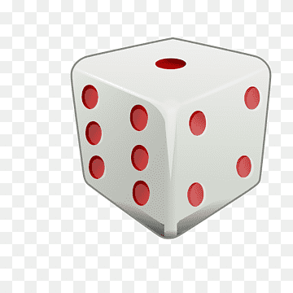

Modifique el programa de Craps de la figura 9.7 para
permitir las apuestas. Inicialice la variable saldoBanco en 1000
dólares. Pida al jugador que introduzca una apuesta. Revise si la
apuesta es menor o igual que saldoBanco y, si no es
así, haga que el usuario vuelva a introducir la apuesta hasta que se
introduzca una válida. Después de introducir una apuesta válida, ejecute un
juego de Craps. Si el jugador gana, aumente el saldoBanco con base
en la apuesta, imprima el nuevo saldoBanco, revise si
saldoBanco es cero y, de ser así, imprima el mensaje ¡Lo
siento. Está en bancarrota! A medida que el jugador progrese, imprima
varios mensajes para crear conversación, como ¿Así que se va a quedar en
bancarrota?, ¡Vamos, arriésguese! o ¡Está teniendo
éxito! ¡Ahora es momento de cambiar sus fichas!. Implemente
la conversación como una función separada que seleccione al azar la cadena a
mostrar.
Haga clic aquí para un video corto que explica las reglas básicas de Craps
El punto es:

Introduzca una apuesta y haga clic en Jugar